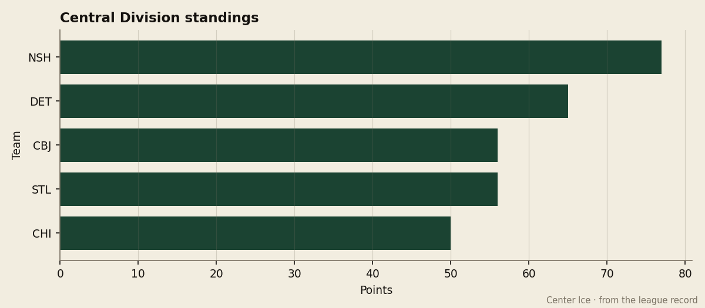

Eight Deep: the ninth club in the West is level with the eighth, and St. Louis has won six straight
The Blues have scored 3 goals in six consecutive games, five of them on the road, and meet a Dallas club that is 22-6 at home.
 Howard BlaineSenior writer, The Blaine Rankings · The Hockey Gazette
Howard BlaineSenior writer, The Blaine Rankings · The Hockey Gazette
 St. Louis Blues has won six straight games, scoring exactly 3 goals each time, and plays at
St. Louis Blues has won six straight games, scoring exactly 3 goals each time, and plays at  Dallas Stars tonight level with
Dallas Stars tonight level with  Columbus Blue Jackets at 56 points on the West's 8th line.
Columbus Blue Jackets at 56 points on the West's 8th line.
The line belongs to Columbus Blue Jackets at the moment on 56 points from 56 games. St. Louis holds the rung beneath it, 56 from 57, and the games in hand run the other way: 25 left for the Blues, 26 for the Blue Jackets. Both clubs live in the Central, where the next man down, Chicago, is on 50.
Above them, 7th is  Detroit Red Wings at 65, with
Detroit Red Wings at 65, with  Colorado Avalanche and
Colorado Avalanche and  Mighty Ducks of Anaheim on 69. Below them the crowding is worse:
Mighty Ducks of Anaheim on 69. Below them the crowding is worse:  Phoenix Coyotes and
Phoenix Coyotes and  Los Angeles Kings on 54,
Los Angeles Kings on 54,  San Jose Sharks on 53. The ninth club in the West sits on the same rung as the eighth.
San Jose Sharks on 53. The ninth club in the West sits on the same rung as the eighth.

Six nights, 3 goals
The streak began at home against Carolina on Feb. 5 and then moved to the road.
| date | at | score |
|---|---|---|
| 2005-02-05 | home | 3-2 vs Carolina |
| 2005-02-07 | away | 3-2 at Minnesota |
| 2005-02-08 | away | 3-1 at San Jose |
| 2005-02-10 | away | 3-2 at Detroit |
| 2005-02-12 | away | 3-1 at Columbus |
| 2005-02-14 | away | 3-1 at Chicago |
Six games, 3 goals in every one, and 2 or fewer against in every one. None of the six needed overtime, which is a change for a club that has 8 overtime wins on the season. The 3-1 win at Columbus on Feb. 12 came against the club it is now tied with.
The man carrying the minutes is  Barret Jackman86, 23, at 30.6 a night on the back end. He has 29 points in 57 games, the 17th pick of the 1999 draft, graded 83 in the Bureau's Book, and the Development Index has him up five. This is a club with a minus-37 goal difference on the season, which tells you what six one- and two-goal wins have been worth.
Barret Jackman86, 23, at 30.6 a night on the back end. He has 29 points in 57 games, the 17th pick of the 1999 draft, graded 83 in the Bureau's Book, and the Development Index has him up five. This is a club with a minus-37 goal difference on the season, which tells you what six one- and two-goal wins have been worth.
 Brent Johnson85 has played 45 of the 57 games in goal, 19 wins and 21 losses, a 3.31 goals-against and a .838 save percentage, graded 85. He has not had to steal the streak. St. Louis has scored 3 a night and left him a cushion, and that is the part Dallas will test.
Brent Johnson85 has played 45 of the 57 games in goal, 19 wins and 21 losses, a 3.31 goals-against and a .838 save percentage, graded 85. He has not had to steal the streak. St. Louis has scored 3 a night and left him a cushion, and that is the part Dallas will test.

The test
Dallas leads the Pacific on 76 points and is 22-6 at home.  Marty Turco94 has 30 wins in 48 games, a 2.82 goals-against and a .871 save percentage, graded 96 in the Book. The clubs have met twice and split, Dallas ahead 6-5 on the goals across the two nights, and the third meeting is tonight.
Marty Turco94 has 30 wins in 48 games, a 2.82 goals-against and a .871 save percentage, graded 96 in the Book. The clubs have met twice and split, Dallas ahead 6-5 on the goals across the two nights, and the third meeting is tonight.
St. Louis has done its winning against the middle of the table. It is 0-3-1 this season against  Nashville Predators, the club that leads the Central on 77 points, and the schedule has not yet asked it to solve a building like Dallas's. Six straight is six straight, and the arithmetic of the 8th line is real, but a club that cannot beat the division leader in four tries now walks into the best home record it has seen in a month.
Nashville Predators, the club that leads the Central on 77 points, and the schedule has not yet asked it to solve a building like Dallas's. Six straight is six straight, and the arithmetic of the 8th line is real, but a club that cannot beat the division leader in four tries now walks into the best home record it has seen in a month.
What the streak is worth
St. Louis pays $56.63M, the eighth-largest payroll in the league, and $1.01M a point. The club draws 13837 a night at $78, on $58.73M of revenue and $11.86M of profit. Columbus pays $49.21M, $0.88M a point, and draws 13969 at $81.
Columbus Blue Jackets has lost three straight. Its leading scorer,  Geoff Sanderson85, is 33 and has 51 goals and 96 points on the year, graded 79, and the Blue Jackets have done their sliding while the Blues have done their climbing.
Geoff Sanderson85, is 33 and has 51 goals and 96 points on the year, graded 79, and the Blue Jackets have done their sliding while the Blues have done their climbing.
The calendar's trade deadline is 31 days away, on 2005-03-19, and two Central clubs on 56 points will spend it in opposite postures unless tonight changes the reading. St. Louis plays 25 more games. The first is tonight at Dallas, and the Stars are 22-6 at home.